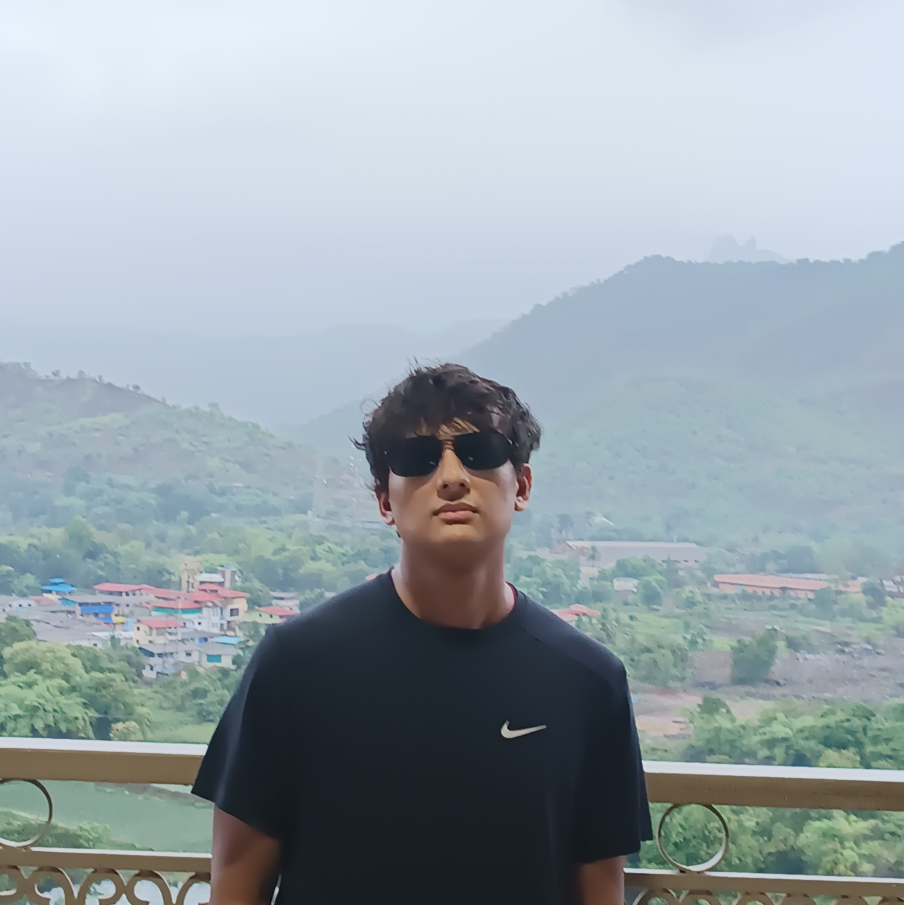
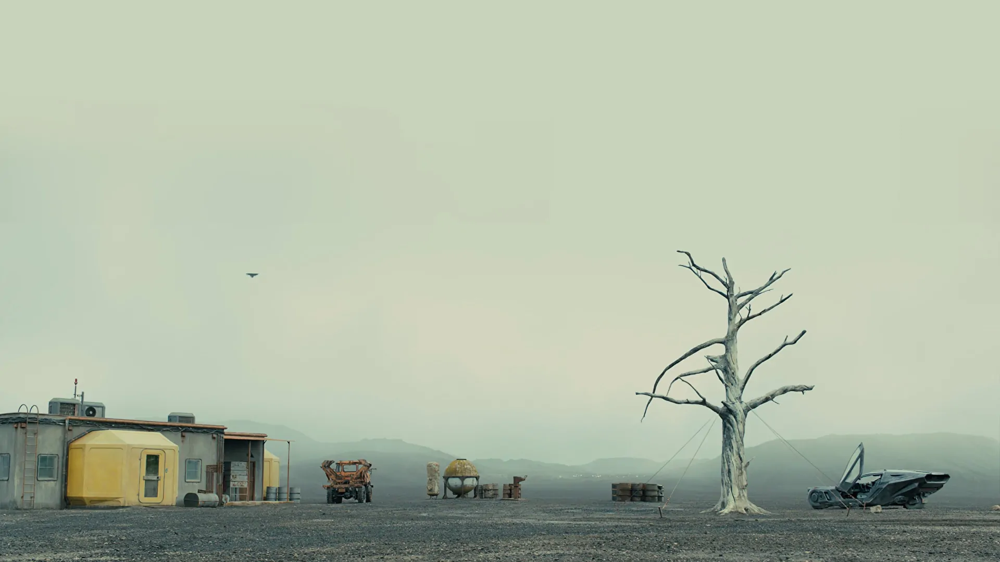
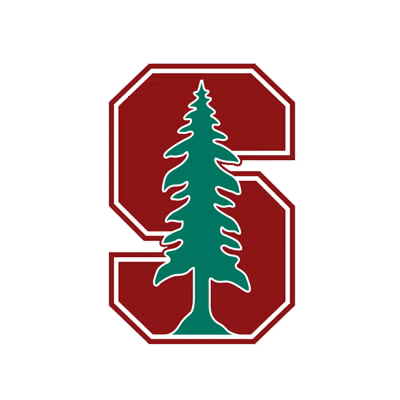
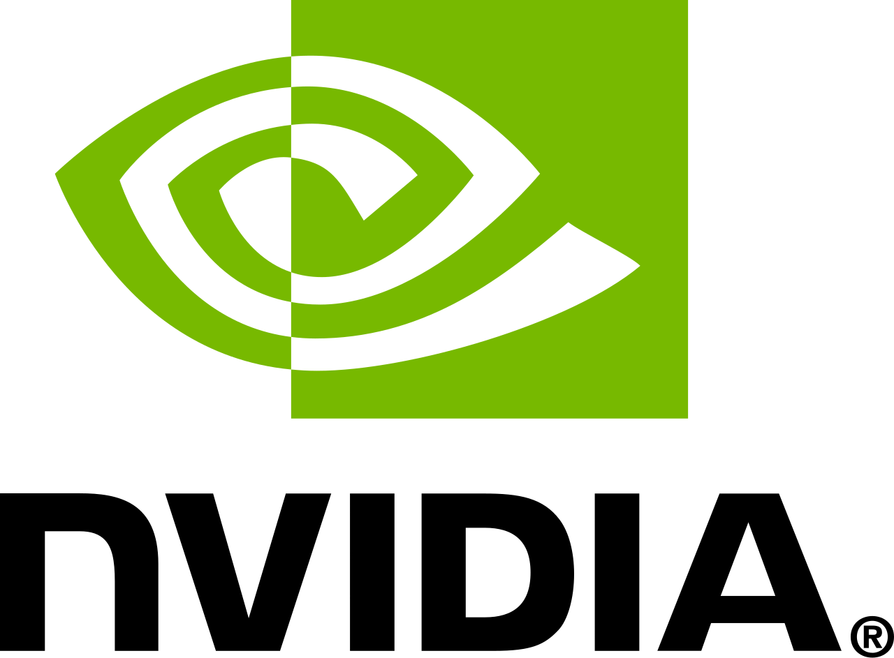
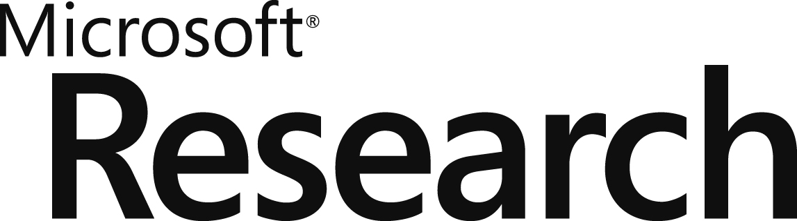
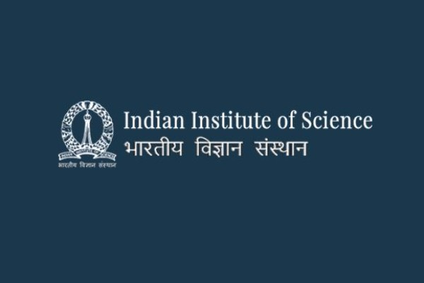
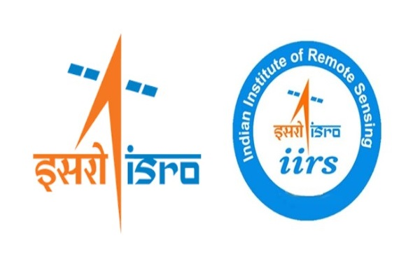

RahulRahul is the name Buddha gave to his son (Also means Silver) ChandChand means "moon" in Sanskrit
राहुल चंद
MS CS · Stanford University
Hi, I am Rahul. I am currently a MSCS student at Stanford 🌲 . Previously I was an intern at the GEAR Lab at NVIDIA Research working on GR00T N1.6 and offline RL. . Before that, I was an intern at NVIDIA's post-training Nemotron LLM team working on latent reasoning, and contributed to Nemo-RL (async RL) and Nemo-Gym.
I was also part of the ILIAD group (Dorsa Sadigh's lab). Prior to joining Stanford 🌲 I worked as a Research Fellow at Microsoft Research on Transformer Compression & Extreme Classification. My current interests are in RL+LLM and Robotics (You can have super intelligence in an API for 20$/month but it would still be fundamentally limited unless you can give it a physical body).
At Stanford I have also been a TA for:
- CS 153 — Infra at Scale (Anjey Midha a16z, Michael Abbot)
- CS 234 — Reinforcement Learning (Emma Brunskill)
- CS 224R — Deep RL (Chelsea Finn)
In the future I look forward to getting replaced by AGI and work as a Wallace design protein farmer 
In my previous life, I completed my undergrad in CS from BITS Pilani. For more details, check my CV.
Publications
CoRL 2025 Oral · Conference on Robot Learning
ICLR 2024 · International Conference on Learning Representations
Open Source
NVIDIA's open platform for humanoid robot learning — training, fine-tuning, and deploying GR00T foundation models.
Tool to check vRAM & token/s requirement for any LLM for consumer hardware. Supports ggml, HuggingFace, bitsandbytes, QLoRA & gradient checkpointing. Used over 120k+ times by 20k+ users.
Starter tutorial for inference with LLaMA in C.
NeMo RL is NVIDIA's open-source post-training library.
NeMo Gym is a framework for building reinforcement learning environments to train LLMs.

Stanford
NVIDIA
Microsoft Research
IISc
IIRS BITS Pilani
BITS Pilani